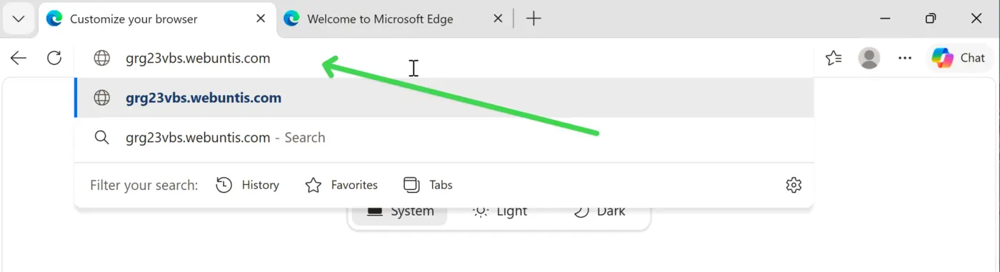
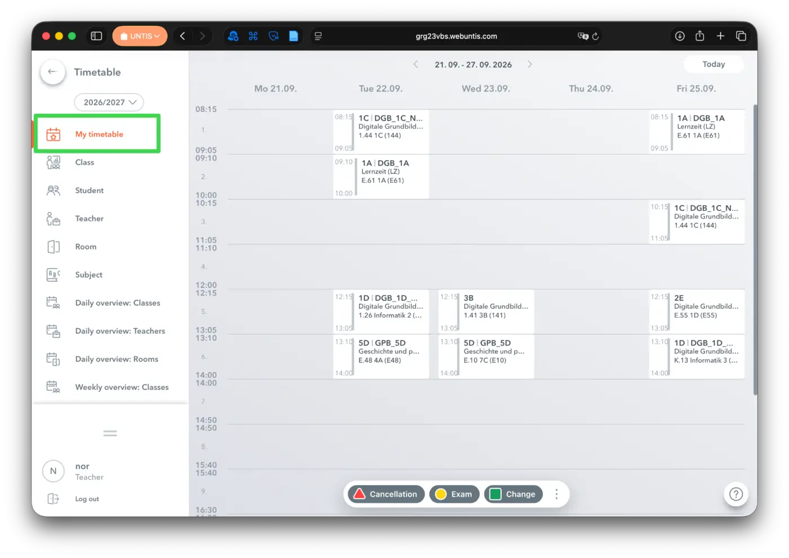
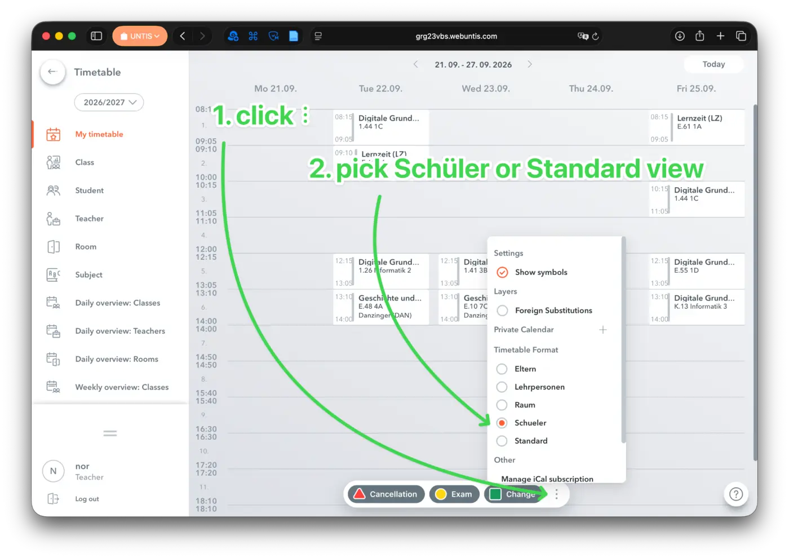
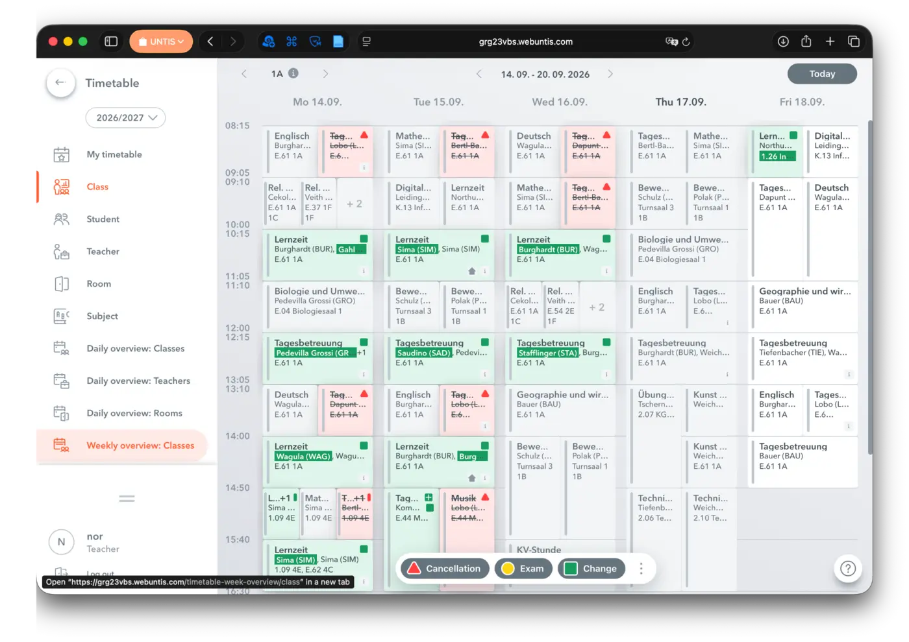
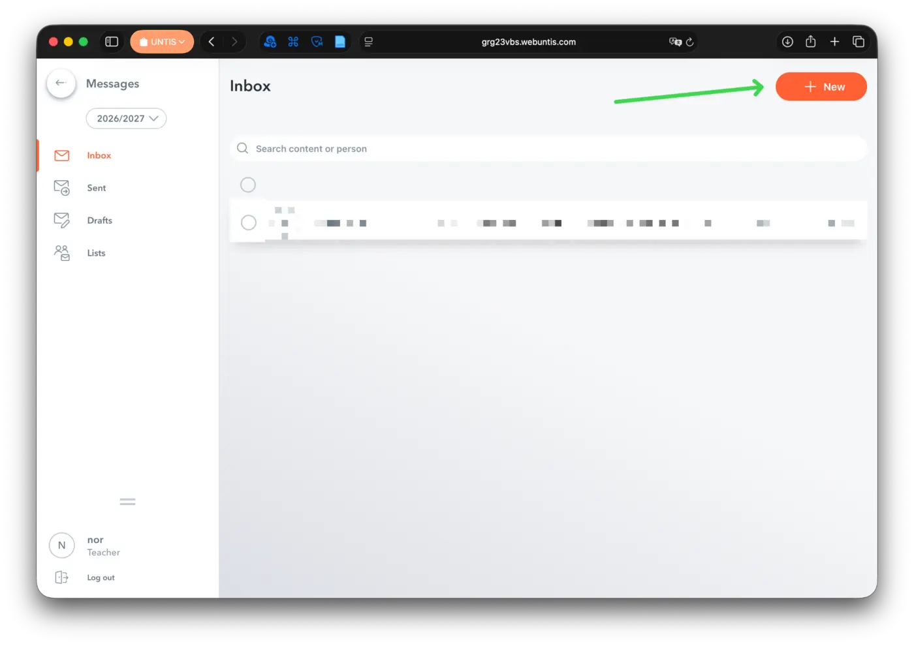
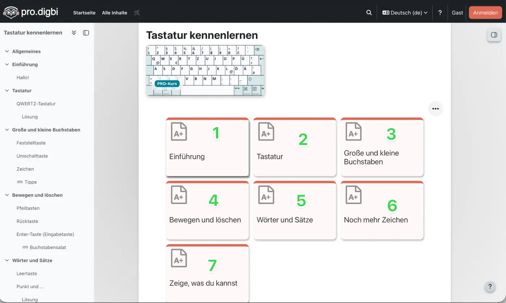

1. Sign in on a new computer
Select Anderer Benutzer (“Other user”). Enter firstname.lastname and your Windows password.
Use the same username and password as in the last lesson.
Read your timetable, find information and write politely
Select Anderer Benutzer (“Other user”). Enter firstname.lastname and your Windows password.
Open Edge. Click „Zum Synchronisieren von Daten anmelden“ (“Sign in to sync data”). The wording may be slightly different in Windows 10.

Enter firstname.lastname@grg23vbs.ac.at. Then click Weiter (“Next”).

Enter the same password you used to sign in to Windows. Click Anmelden (“Sign in”).

If „Lassen Sie uns Ihr Konto schützen“ (“Let’s protect your account”) appears, click Weiter (“Next”).

Click the small “Setup überspringen” (“Skip setup”) link — not the large “Weiter” button. You may need to do Weiter → Setup überspringen twice.

When asked “Sign in to all apps and websites on this device?”, click Ja (“Yes”).

When asked “Allow your organisation to manage your device?”, click Nein (“No”).

Click „Bestätigen und fortfahren“ (“Confirm and continue”).
Click „Alle ablehnen“ (“Reject all”).

Keep clicking Weiter (“Next”) through the appearance settings until setup is finished.

Select “Don’t allow” or remove the tick.

Click the address bar and enter grg23vbs.webuntis.com. Press Enter.

Your Untis username uses the first three letters of your last name and the first three letters of your first name: LasFir. Example: Muster + Anna → MusAnn.
Your first password is your date of birth in YYYYMMDD format. Example: 7 March 2016 → 20160307. Then change it to your Windows password.
Click My timetable on the left. This shows your own timetable.

Click the three dots at the bottom. Under Timetable Format, choose either Schueler or Standard.

Use the arrows at the top to move one week backwards or forwards. Select Today to return to the current week.

A lesson usually shows three important pieces of information:
| COURSE | TEACHERS | ROOM |
|---|---|---|
| Course, class or subject | Teacher’s name or short code | Room number or room name |
Open Messages. You will see your inbox and the + New button at the top right.

A good message has a greeting, one clear piece of information or a question, and a friendly ending.
Open teams.microsoft.com. Sign in with your school email address and Windows password.
Send one of us a polite message. Say whether you had any problems. If you did, describe the problem briefly.
Only when you have finished everything else: open the keyboard course. Complete the parts in order: 1, 2, 3 ….
